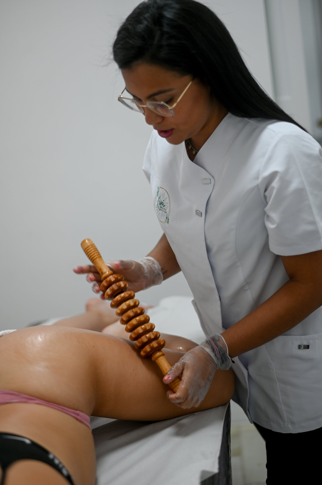

Cuerpo · I
Maderoterapia colombiana
Esculpe figura, drena retención y activa la circulación desde la primera sesión.
Protocolo completo de maderoterapia colombiana con rodillo liso, rodillo de cubos, tabla anticelulítica, copa sueca y champiñón. Cada herramienta trabaja una zona específica. La presión y el ritmo se adaptan a ti: ni una opresión que duela, ni un masaje que no se sienta.
- Reduce celulitis y volumen localizado
- Drena retención de líquidos
- Activa la circulación y tonifica la piel
- Resultados desde la 1ª sesión · protocolo óptimo 12-16 sesiones
- Mejor combinada con 1h de cardio diario e hidratación